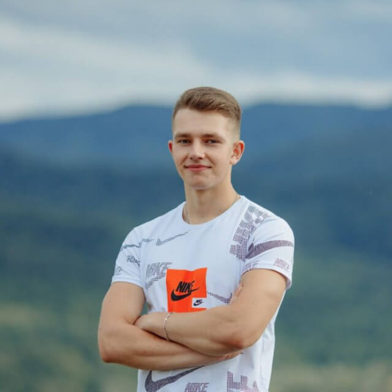
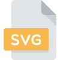
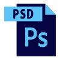
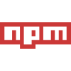
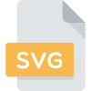
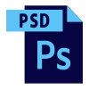
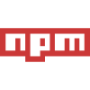

Про мене
Я фронтенд-розробник з Харкова. Серйозний та відданий девелопер з досвідом та пристрастю до створення візуально привабливих та зручних користувацьких інтерфейсів.
Маю технічні вміння у використанні HTML, CSS та JavaScript, володію навичками у використанні сучасних інструментів розробки, зокрема сбірником проектів Gulp, що оптимізує процес розробки та забезпечує високу якість коду.
Моя мета - забезпечити бездоганну роботу веб-додатків та веб-сайтів, забезпечуючи реактивність та кросс-браузерну сумісність. Я готовий приймати нові виклики та вивчати нові технології, щоб залишатися на передовій у світі веб-розробки. Прагну постійно удосконалювати свої знання та навички, завдяки чому завжди готовий до вирішення навіть найскладніших завдань у веб-розробці.
Моє бажання вчитися та стрімко розвиватися змушує мене розглядати реактивні технології, зокрема React, як наступний крок у моєму професійному розвитку. Готовий приєднатися до команди, де мої знання та робочий ентузіазм сприятимуть створенню високоякісних та інноваційних веб-додатків.

- Ім'я: Дерев'янко Олександр
- Дата народження: 05.02.1999
- Місто: Харків
- Телефон: +380669937460
- Пошта: derevyankoolx@gmail.com

Освіта

Навички
- HTML5
- CSS3
- JavaScript
- jQuery
- Gulp
- SCSS
- Bootstrap
- Git
- Figma
- Photoshop
Досвід
-
JJCamp
Фріланс-проект
JJ camp - це фріланс-проект, в рамках якого я займаюся розробкою нових сторінок сайту та впровадженням нового функціоналу. Мій підхід базується на використанні сучасних інструментів, таких як Gulp для автоматизації завдань, SCSS для зручної роботи з CSS та бібліотеки JQuery для покращення взаємодії та динамічності веб-сторінок.
-
FineCode
Фріланс-проект
FineCode - це проект, для якого я розробив верстку сайту з новим та оновленим дизайном. В рамках співпраці з талановитим дизайнером ми об'єднали свої зусилля для створення красивого та юзер-френдлі дизайну, який залишиться в пам'яті користувачів.
Під час реалізації проекту, я активно співпрацював із дизайнером, впроваджуючи його творчі ідеї та долучаючи власний професіоналізм. На жаль, на даний момент оновлений дизайн ще не впроваджений на сайті, але результати нашої спільної роботи варті очікування.
-
Міністерство Добрих Дій
Волонтерство
Міністерство Добрих Дій (МДД) – це волонтерський незалежний рух, який виник у лютому 2022 року під час повномасштабного вторгнення.
Протягом цього періоду, керівництво МДД звернулося до мене та дизайнера із проханням розробити лендінг – веб-сторінку, яка відображала б мету та досягнення волонтерського руху. Ми врахували кожну деталь, намагаючись привернути увагу та стимулювати підтримку спільноти.
Слід зазначити, що в середині 2023 року волонтерский рух успішно припинив свою діяльність.
Відгуки
-

Неплохой верстальщик с уникальным подходом и хорошими навыками в создании сайтов.
Директор проекту JJcamp
-

Чудовий спеціаліст, гарно виконує свою роботу. Це саме те що мені потрібно.
Творець FineCode
-

Чуйний і добрий, посприяв у створенні сайту та допоміг проекту у важкі часи, хороший програміст.
Засновник волонтерства МДД


 







Портфоліо